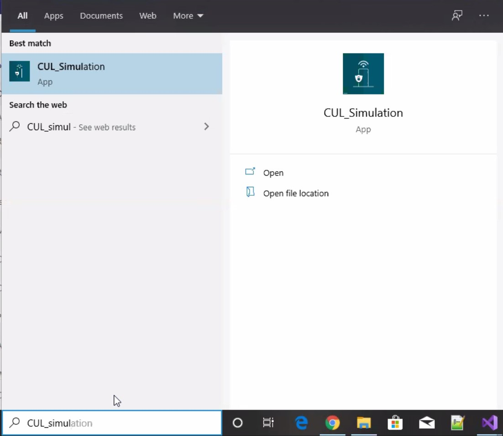
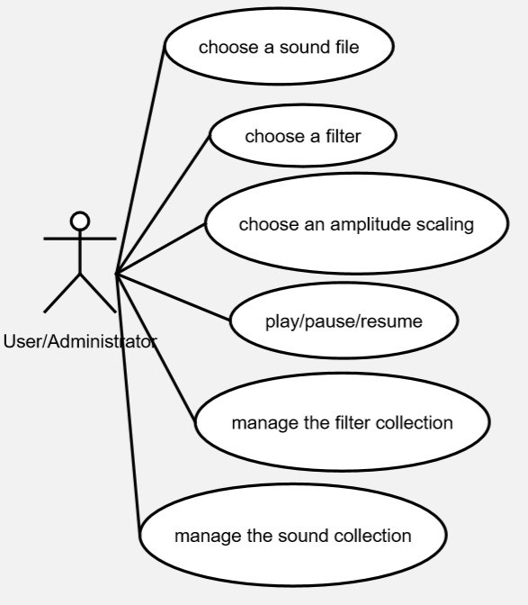
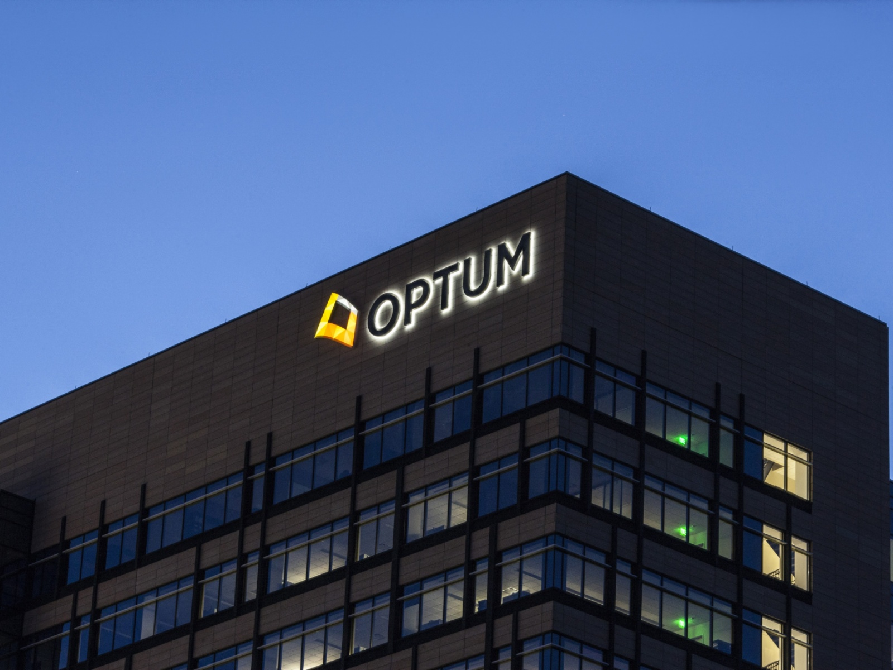
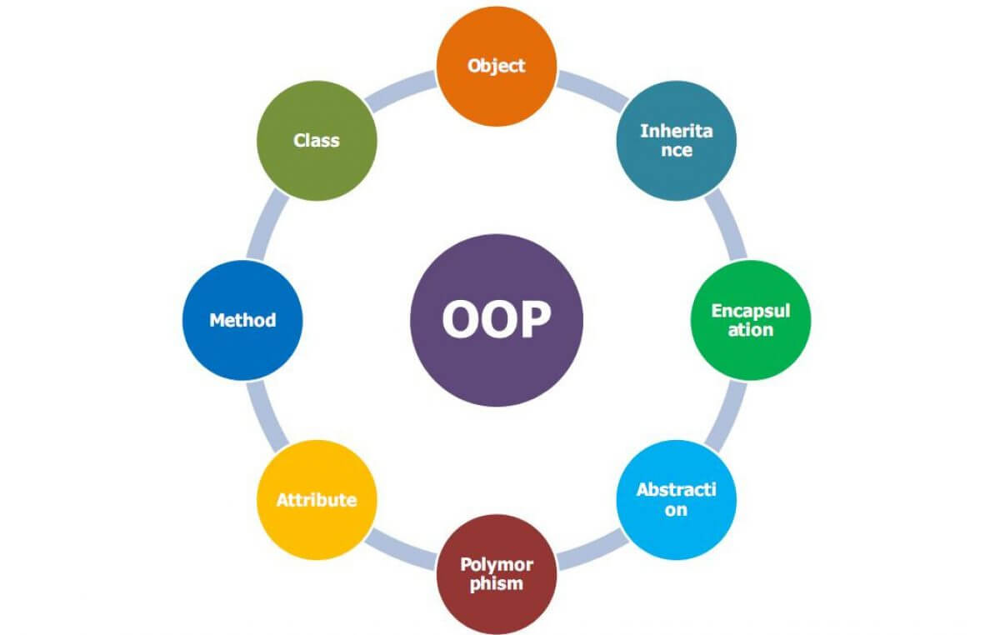
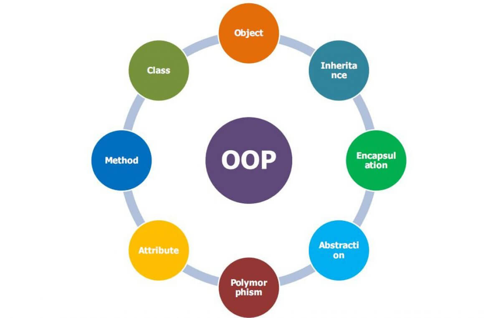
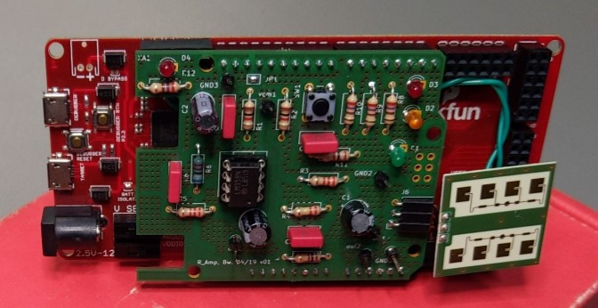
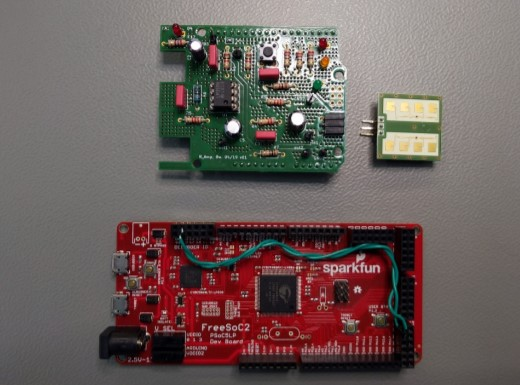
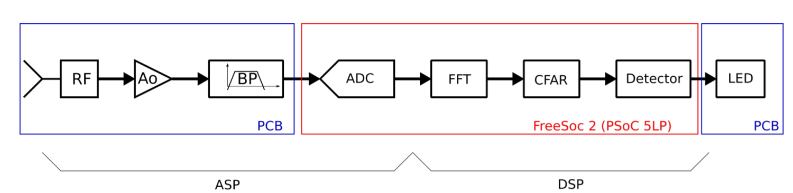

Projects Portfolio
Windows GUI Application

Overview
The project aims to create a Windows 10 Application, which is used to capture the secret key of the smart home devices with the help of a sniffing device, and that key is further used to control the smart home devices through the GUI application made by using the MFC in visual studio.
Thus, it demonstrates a replay attack and thereby gains control over the smart home devices.
The code is written in C++ and gcrypt library is used for encryption and decryption purposes. The data from the application is sent to the CUL stick via a serial communication port and then it transmits data to the base station wirelessly. Wireshark is used to track the incoming and outgoing packets of a base station and smart home devices.
Hardware Used:
• Sniffing device - CUL 868
• Smart Home Devices (Smart-Switch/ Window-Contact)
• Qivicon Base Station
Software Used:
• Microsoft Visual Studio
• WireShark
• H-term
• TortoiseGit
C++ Console Application

Overview
The project aims to built a audio player application which plays the ringtones (WAV Files) using the C++ application and control it using the IOWarrior 40 hardware kit.
Users can control the start/stop/resume operation using the button on IOWarrior and the amplitude level of the music played is displayed on the 8 LEDs of the IoWarrior kit.
The filters are generated using the MATLAB and these filters can be selected by the user to apply to the muisc played,using the console of the application.
The project consists of the following setup:
Project Link
• MySQL DB - For storing the WAV files of the ringtones, Filters that can be applied to the ringtone while playing or before starting the play.
• Eclipse IDE
• IOwarrior API
• Port Audio Stream API
• Separate DB classes for the filter database and the Sound Database
• A separate User-Interface Class which handles all the requests from the user
• MVC model-based application
• Separate Exception Handling and also the file handling classes are created
Work Experience

 

Overview
Worked as a Software Engineer at Optum Global Solutions Pvt Ltd Hyderabad, India from July 2017 to August 2019.
Optum is the technology wing of the United Health Group(UHG).
UHC Motion (October 2017 - March 2018)
• This is my first project in my career as a software engineer.
Major contribution in this project was to completely modify the HTML, CSS, JavaScript
of the production to make it error-free for different browsers, Mobile views, and
make the content in it accessible to the blind users who use the non-visual desktop aided applications like NVDA.
• The application was build based on the .Net Framework using visual studio.
M&R Portals (April 2018 - August 2019)
• The project deals with the consumer portals of the company, through which customer's actually buy the products offered.
• In a scrum team of 8 members which includes Team Leader, Scrum Master, 5 Developers(Including me), Product Owner. We used to develop the new enhancement features and web pages as per the business requirements following the Agile scrum methodologies.
• One of the major contributions from my end involves the Home Page Redesigning which is the present production UI layout.
HomePage
• This project is quite interesting and involves an overall 80 members of a big team which is divided into several sub-teams.
• I gained a lot of experience in this project by learning the software development lifecycle practically from the initial stage of creating a feature as per the business requirement to the final product handover to the business.
• Involved in the bug fixing and supported the production releases (which takes place every month).
• Received STAR Award for the good performance
• The UI for the below two pages is built according to the business requirements, which is my other major contribution.
Decision-Guide
Agent-Appointment
The following web languages are involved in it:
HTML
CSS
Angular JS
JavaScript
Other technologies involved are:
JAVA
MySQL
Adobe Experience Manager(AEM)-For Content Management
REST API
SOAP UI – For Webservices Testing
GitHub
Jenkins – For Auto triggering build configurations
The software tools used are:
Beyond Compare
Tortoise Git
Postman
Microsoft outlook
STS (spring tool suite)
Eclipse IDE
KiCAD Project


Overview
The project aims to create a system, which detects the moving object and indicates its presence.
The system mainly consists of designed PCB boards with all the essential hardware parts and a FreeSoc2 board which also consists of an inbuilt Arduino board in it.
The code is written in C using the PSoC Creator for USB Serial Communication to Arduino. The output of the sensor after amplification is sent to the 4th order bandpass amplifier and then after transferred to Arduino for further processing into a digital signal and later the output is observed as an LED Indication.
Hardware Used:
• IPM165 RADAR Sensor (Works on Doppler Effect)
• 4th Order Bandpass Amplifier (Created using KiCAD as per requirement)
• FreeSoc2 Board
Software Used:
• PSoC Creator
• KiCAD
• H-term
• Matlab
The overall block representation of the Project is as follows:
